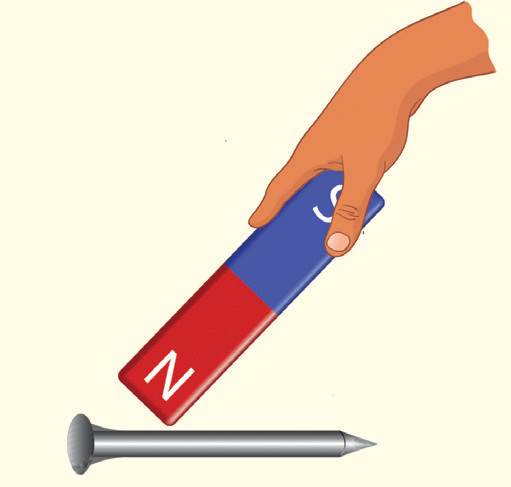
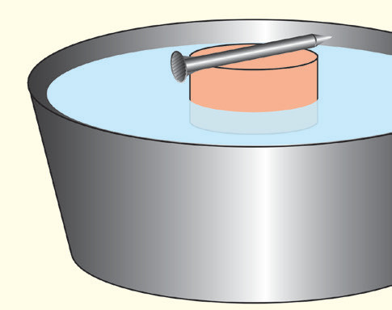

Just as with the compass needle, the pole which points towards the north is the north-seeking pole (N pole), and the other is the south-seeking pole (S pole).

Activity 3.10
Procedure
Using the north pole of a bar magnet, stroke a nail or straight pin from head to tip 10 to 15 times. This magnetises the nail with a south pole (SP) at the tip and a north pole (NP) at its head as shown in Figure 3.48.

Float a cork or rubber stopper in a dish with shallow water. Place the nail on the cork as shown in Figure 3.49.

Figure 3.49Push one end of the nail slightly horizontally so that it rotates slowly. When the nail comes to rest, its tip will be pointing toward the earth’s MSP.
Place a piece of tape on the edge of the dish to mark this direction.
Push the nail slightly, then observe its orientation when it stops moving. Repeat this several times.
Questions
Does the needle always point in one direction? Why?
Earth’s magnetic lines of force about a bar magnet
The Earth’s magnetic lines of force about a bar magnet are a resultant of two